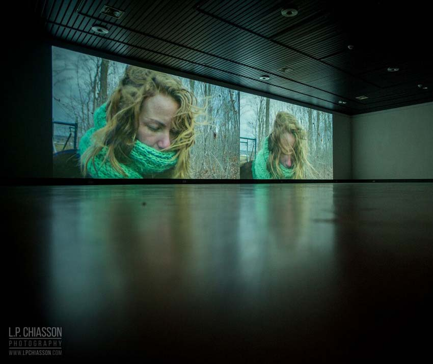

Jessica Arseneau
::: portfolio
Images and projects
Lost Idyll
2015
Digital video
00:11:55 loop

Installation view at Galerie d'art Louise-et-Reuben-Cohen, Moncton.
Alternately one or two images projected side by side, this video installation shows a woman transporting a cumbersome scaffolding through various spacious landscapes and an autumnal forest. Entering the field of one projection and going out of the other, this woman makes a Sisyphean movement, repeating from a place to another in a continuous mobility.


Ephemeral structures composing our urban landscape, the scaffolding characterize the spectacle of the everyday life and is a common figure of our collective imaginary. While this woman performs this Sysiphean movement,an ambiguity stands out between the object suggesting a fixity and thisperpetual passage. It recalls to an everyday’s systematization that opposes itself to what is at the most transitory and indefinitely unfinished.
 Installation view at Chapelle des Carmélites, during Rencontres Traverse Vidéo, Toulouse.
Installation view at Chapelle des Carmélites, during Rencontres Traverse Vidéo, Toulouse.
The powerful wind and the restless sky confer a dramatic dimension to the diptych, whereas the slowness of the sequences immerses the viewer into contemplation. At times, the projected sequences are identical but slightly delayed, evoking a double consciousness, maybe confused, which seems to derive.
SPECIAL THANKS TO
Normand Forget to whom this project is dedicated
and to
Léandre Bourgeois
Jean-Francois Boisvenue
Martine Brisson
Jérôme Décarie
Éric Delarue
Jean-François Desaulniers
Claude Desbiens
Violaine Gauvreau
Élodie Lançon
Will Niava
Julie Perron
Marc-Yvan S. Poitras
Martin Skorek
Carl Surprenant
Lost Idyll (2015) is distributed by Groupe Intervention Vidéo (GIV) : givideo.org